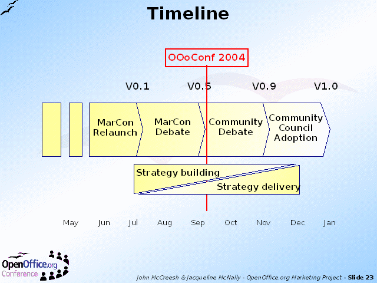

Notes:
The Workshop had explored the strategy development process in a very rapid and time-constrained fashion. However, for the past few months this process had been taking place 'for real' on a discussion list used by the MarCons - Marketing Contacts - people within the Marketing Project with responsibility for particular geographical or other markets.
From this activity the Project Leads have created a series of draft Strategic Marketing Plans. These had now reached the 0.5 release - the half way stage to the final version.
The Workshop at OOoConff marked the official release of 0.5 to the Community for a full Community debate, with the intention of having the 1.0 release approved by the Community Council by the end of 2004.
The early stages of this process concentrate on getting the strategy right; once this is agreed, the later stages will focus more on how to implement it.